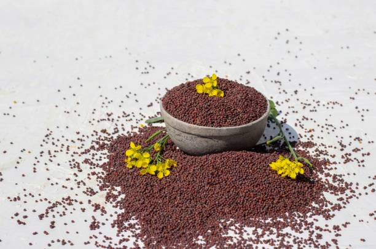
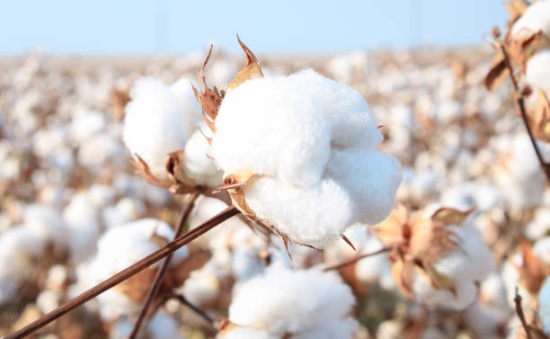
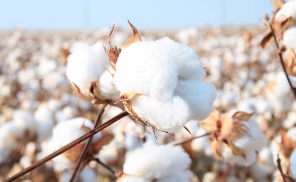
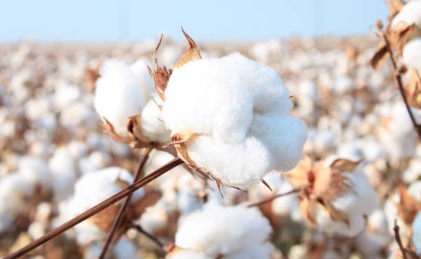

Black gram, also known as urad dal, is a valuable legume in Indian agriculture, known for its high
protein content and various culinary uses. Here’s a detailed step-by-step mechanism for growing black
gram from seed selection to harvesting:
1] Seed Selection and Sowing:
Start with selecting high-quality, disease-free black gram seeds. Seeds
should be treated with fungicides to prevent soil-borne diseases. The optimal time for sowing is during
the kharif season (June to July) when the soil temperature is warm. Seeds are sown 2-3 cm deep in
well-prepared, well-drained soil, ideally in rows spaced 30-45 cm apart.
2] Germination:
Upon sowing, black gram seeds absorb moisture and begin to germinate. This process takes
about 5-7 days under suitable conditions, with the radicle emerging first, followed by the shoot. Soil
temperature around 25°C to 30°C promotes good germination.
3] Vegetative Growth:
After germination, the plant enters the vegetative growth phase. Black gram develops
a strong root system and erect stems with broad leaves. The plant typically grows to about 60-90 cm in
height. Adequate sunlight and moisture are crucial during this stage to ensure healthy leaf
development.
4] Flowering:
Approximately 30-40 days after sowing, the plant begins to flower. The flowers are small and
white, appearing in clusters. Black gram plants are primarily self-pollinating, which means they do not
rely on external pollinators. This phase lasts for about 2-3 weeks.
5] Pod Formation:
After successful pollination, the flowers develop into pods. Each pod usually contains
2-6 seeds. This stage is critical for the development of seeds, and it typically occurs 60-70 days after
sowing. The plants should be monitored for moisture needs, as water stress can adversely affect pod
formation.
6] Pest and Disease Management:
Black gram is susceptible to pests like aphids and diseases such as blight
and wilt. Regular monitoring is essential. Integrated Pest Management (IPM) strategies, including the
use of neem oil and insecticidal soaps, can effectively control pests. Crop rotation and resistant
varieties help manage diseases.
7] Seed Development:
As the pods mature, seeds inside grow and harden. This maturation process lasts for
about 20-30 days. The plant begins to yellow and dry out, indicating that the seeds are nearing
maturity. Watering should be reduced to promote drying.
8] Harvesting:
Harvesting occurs when the pods are fully mature and dry, typically 90-110 days after
sowing. The plants are cut at the base, and the pods are allowed to dry further in the field for a few
days. Manual or mechanical threshing is used to separate the seeds from the pods.
9] Post-Harvest Processing:
After threshing, the seeds are cleaned and dried to remove any residual
moisture. Proper storage in cool, dry conditions helps prevent spoilage and pest infestations.
Containers should be airtight to protect against humidity.
10] Pest Control in Storage:
To ensure the longevity of stored black gram, use insect repellents or storage
methods such as diatomaceous earth to prevent pest damage. Regular inspections are essential to maintain
seed quality.
Throughout its growth, black gram thrives in warm climates with well-drained soils. Adequate care during
each phase of its development can lead to a successful and bountiful harvest.
हिंदी
काला चना, जिसे उड़द दाल के नाम से भी जाना जाता है, भारतीय कृषि में एक मूल्यवान फलियां है, जो अपनी उच्च प्रोटीन सामग्री और विभिन्न पाक उपयोगों के लिए जानी जाती है। बीज चयन से लेकर कटाई तक काले चने उगाने के लिए यहां एक विस्तृत चरण-दर-चरण तंत्र दिया गया है:
1] बीज चयन और बुआई: उच्च गुणवत्ता वाले, रोग मुक्त काले चने के बीज का चयन करके शुरुआत करें। मृदा जनित रोगों से बचाव के लिए बीजों को फफूंदनाशकों से उपचारित करना चाहिए। बुआई का सर्वोत्तम समय ख़रीफ़ सीज़न (जून से जुलाई) के दौरान होता है जब मिट्टी का तापमान गर्म होता है। बीज अच्छी तरह से तैयार, अच्छी तरह से सूखा मिट्टी में 2-3 सेमी गहराई में बोए जाते हैं, आदर्श रूप से 30-45 सेमी की दूरी पर पंक्तियों में बोए जाते हैं।
2] अंकुरण: बुआई के बाद, काले चने के बीज नमी को अवशोषित करते हैं और अंकुरित होने लगते हैं। उपयुक्त परिस्थितियों में इस प्रक्रिया में लगभग 5-7 दिन लगते हैं, जिसमें पहले मूलांकुर निकलता है, उसके बाद अंकुर निकलता है। 25°C से 30°C के आसपास मिट्टी का तापमान अच्छे अंकुरण को बढ़ावा देता है।
3] वनस्पति विकास: अंकुरण के बाद, पौधा वनस्पति विकास चरण में प्रवेश करता है। काले चने में एक मजबूत जड़ प्रणाली विकसित होती है और चौड़ी पत्तियों के साथ तने खड़े होते हैं। पौधा आमतौर पर लगभग 60-90 सेमी ऊंचाई तक बढ़ता है। स्वस्थ पत्ती के विकास को सुनिश्चित करने के लिए इस चरण के दौरान पर्याप्त धूप और नमी महत्वपूर्ण है।
4] फूल आना: बुआई के लगभग 30-40 दिन बाद पौधे में फूल आना शुरू हो जाता है। फूल छोटे और सफेद होते हैं, जो गुच्छों में लगते हैं। उड़द के पौधे मुख्य रूप से स्व-परागण करने वाले होते हैं, जिसका अर्थ है कि वे बाहरी परागणकों पर निर्भर नहीं होते हैं। यह चरण लगभग 2-3 सप्ताह तक चलता है।
5] फली निर्माण: सफल परागण के बाद, फूल फली में विकसित हो जाते हैं। प्रत्येक फली में आमतौर पर 2-6 बीज होते हैं। यह अवस्था बीजों के विकास के लिए महत्वपूर्ण है, और यह आमतौर पर बुआई के 60-70 दिन बाद होती है। पौधों में नमी की आवश्यकता की निगरानी की जानी चाहिए, क्योंकि पानी की कमी फली निर्माण पर प्रतिकूल प्रभाव डाल सकती है।
6] कीट और रोग प्रबंधन: काला चना एफिड जैसे कीटों और ब्लाइट और विल्ट जैसी बीमारियों के लिए अतिसंवेदनशील है। नियमित निगरानी जरूरी है. नीम के तेल और कीटनाशक साबुन के उपयोग सहित एकीकृत कीट प्रबंधन (आईपीएम) रणनीतियाँ कीटों को प्रभावी ढंग से नियंत्रित कर सकती हैं। फसल चक्र और प्रतिरोधी किस्में बीमारियों के प्रबंधन में मदद करती हैं।
7] बीज विकास: जैसे-जैसे फलियां परिपक्व होती हैं, अंदर के बीज बढ़ते हैं और सख्त हो जाते हैं। यह परिपक्वता प्रक्रिया लगभग 20-30 दिनों तक चलती है। पौधा पीला होकर सूखने लगता है, जो दर्शाता है कि बीज परिपक्वता के करीब हैं। सुखाने को बढ़ावा देने के लिए पानी कम देना चाहिए।
8] कटाई: कटाई तब होती है जब फलियां पूरी तरह से परिपक्व और सूखी होती हैं, आमतौर पर बुआई के 90-110 दिन बाद। पौधों को आधार से काटा जाता है, और फलियों को कुछ दिनों तक खेत में सूखने दिया जाता है। बीज को फली से अलग करने के लिए मैनुअल या मैकेनिकल थ्रेसिंग का उपयोग किया जाता है।
9] कटाई के बाद की प्रक्रिया: थ्रेसिंग के बाद, बची हुई नमी को हटाने के लिए बीजों को साफ किया जाता है और सुखाया जाता है। ठंडी, शुष्क परिस्थितियों में उचित भंडारण से खराब होने और कीटों के संक्रमण को रोकने में मदद मिलती है। नमी से बचाने के लिए कंटेनरों को वायुरोधी होना चाहिए।
10] भंडारण में कीट नियंत्रण: संग्रहित काले चने की लंबी उम्र सुनिश्चित करने के लिए, कीटों से होने वाले नुकसान को रोकने के लिए कीट विकर्षक या डायटोमेसियस अर्थ जैसी भंडारण विधियों का उपयोग करें। बीज की गुणवत्ता बनाए रखने के लिए नियमित निरीक्षण आवश्यक है।
अपने पूरे विकास के दौरान, काला चना अच्छी जल निकासी वाली मिट्टी के साथ गर्म जलवायु में पनपता है। इसके विकास के प्रत्येक चरण के दौरान पर्याप्त देखभाल से सफल और भरपूर फसल प्राप्त की जा सकती है।
सुनना
2.GREEN GRAM / 2.हरा चना
ENGLISH
Green gram, also known as moong dal, is a highly nutritious legume widely cultivated in India. It is
valued for its protein content and quick growth cycle. Below is a detailed step-by-step mechanism for
growing green gram from seed selection to harvesting:
1] Seed Selection and Sowing:
Select high-quality, disease-free green gram seeds. It’s important to treat seeds with fungicides to
minimize the risk of soil-borne diseases. Green gram is typically sown in the kharif season (June to
July) or rabi season (October to November). Seeds are sown about 2-3 cm deep in well-drained soil, with
rows spaced 30-45 cm apart.
2] Germination:
After sowing, the seeds absorb moisture and begin germinating. This process usually takes about 5-7
days, provided the soil temperature is between 25°C and 30°C. The radicle (embryonic root) emerges
first, followed by the shoot.
3] Vegetative Growth:
Once germinated, the plant enters the vegetative growth phase. Green gram develops a robust root system
and erect stems with trifoliate leaves. The plant typically grows to a height of 30-60 cm. Adequate
sunlight and moisture are crucial for healthy growth during this phase.
4] Flowering:
About 30-40 days after sowing, the plant begins to flower. The flowers are small, yellow, and often
appear in clusters. Green gram is primarily self-pollinating, which means it does not require external
pollinators. Flowering lasts for about 2-3 weeks, and favorable weather conditions are essential for
optimal pollination.
5] Pod Formation:
Following successful pollination, flowers develop into pods. Each pod usually contains 4-6 seeds. This
phase occurs approximately 60-70 days after sowing. Adequate moisture is important during pod formation
to ensure good seed development.
6] Pest and Disease Management:
Green gram can be affected by pests such as aphids, pod borers, and diseases like bacterial blight and
downy mildew. Regular monitoring is vital. Integrated Pest Management (IPM) practices, including neem
oil applications and crop rotation, can effectively manage these issues.
7] Seed Development:
As pods mature, the seeds inside grow and harden over a period of about 20-30 days. The plants gradually
begin to yellow and dry out, indicating the seeds are nearing maturity. Watering should be minimized to
promote proper drying of the plants.
8] Harvesting:
Harvesting is done when the pods are fully mature and dry, typically 90-100 days after sowing. The
plants are cut at the base, and the pods are left to dry in the field for a few days. Threshing can be
done manually or mechanically to separate the seeds from the pods.
9] Post-Harvest Processing:
After threshing, the seeds are cleaned and dried to reduce moisture content. Proper storage is crucial
to prevent spoilage and pest infestations. Seeds should be kept in cool, dry conditions, ideally in
airtight containers.
10] Pest Control in Storage:
To protect stored green gram, consider using natural pest repellents or storage techniques like
diatomaceous earth. Regular inspections of stored seeds are essential to maintain quality and prevent
damage from insects.
Throughout its growth, green gram benefits from well-drained soil, adequate sunlight, and proper care
during each phase to ensure a successful harvest.
हिंदी
हरा चना, जिसे मूंग दाल के नाम से भी जाना जाता है, भारत में व्यापक रूप से उगाई जाने वाली एक अत्यधिक पौष्टिक फलियां है। इसकी प्रोटीन सामग्री और त्वरित विकास चक्र के लिए इसे महत्व दिया जाता है। बीज चयन से लेकर कटाई तक मूंग उगाने के लिए नीचे एक विस्तृत चरण-दर-चरण तंत्र दिया गया है:
1] बीज चयन और बुआई: उच्च गुणवत्ता वाले, रोग मुक्त मूंग बीज का चयन करें। मृदा जनित रोगों के जोखिम को कम करने के लिए बीजों को फफूंदनाशकों से उपचारित करना महत्वपूर्ण है। हरे चने की बुआई आमतौर पर ख़रीफ़ सीज़न (जून से जुलाई) या रबी सीज़न (अक्टूबर से नवंबर) में की जाती है। बीजों को अच्छी तरह से सूखा मिट्टी में लगभग 2-3 सेमी गहराई में, पंक्तियों में 30-45 सेमी की दूरी पर बोया जाता है।
2] अंकुरण: बुआई के बाद, बीज नमी को अवशोषित करते हैं और अंकुरित होने लगते हैं। इस प्रक्रिया में आमतौर पर लगभग 5-7 दिन लगते हैं, बशर्ते मिट्टी का तापमान 25°C और 30°C के बीच हो। मूलांकुर (भ्रूण जड़) पहले निकलता है, उसके बाद अंकुर निकलता है।
3] वानस्पतिक विकास: एक बार अंकुरित होने के बाद, पौधा वनस्पति विकास चरण में प्रवेश करता है। हरे चने में एक मजबूत जड़ प्रणाली विकसित होती है और तीन पत्तों वाली पत्तियों के साथ तने उभरे हुए होते हैं। पौधा आमतौर पर 30-60 सेमी की ऊंचाई तक बढ़ता है। इस चरण के दौरान स्वस्थ विकास के लिए पर्याप्त धूप और नमी महत्वपूर्ण है।
4] फूल आना: बुआई के लगभग 30-40 दिन बाद पौधे में फूल आना शुरू हो जाता है। फूल छोटे, पीले और अक्सर गुच्छों में दिखाई देते हैं। हरा चना मुख्य रूप से स्व-परागण करने वाला होता है, जिसका अर्थ है कि इसे बाहरी परागणकों की आवश्यकता नहीं होती है। फूल लगभग 2-3 सप्ताह तक रहता है, और इष्टतम परागण के लिए अनुकूल मौसम की स्थिति आवश्यक है।
5] फली निर्माण: सफल परागण के बाद, फूल फली में विकसित होते हैं। प्रत्येक फली में आमतौर पर 4-6 बीज होते हैं। यह अवस्था बुआई के लगभग 60-70 दिन बाद होती है। अच्छे बीज विकास को सुनिश्चित करने के लिए फली निर्माण के दौरान पर्याप्त नमी महत्वपूर्ण है।
6] कीट और रोग प्रबंधन: हरा चना एफिड, फली छेदक जैसे कीटों और बैक्टीरियल ब्लाइट और डाउनी फफूंदी जैसी बीमारियों से प्रभावित हो सकता है। नियमित निगरानी महत्वपूर्ण है. नीम तेल अनुप्रयोग और फसल चक्र सहित एकीकृत कीट प्रबंधन (आईपीएम) प्रथाएं इन मुद्दों को प्रभावी ढंग से प्रबंधित कर सकती हैं।
7] बीज विकास: जैसे-जैसे फलियां परिपक्व होती हैं, अंदर के बीज लगभग 20-30 दिनों की अवधि में बढ़ते हैं और सख्त हो जाते हैं। पौधे धीरे-धीरे पीले होकर सूखने लगते हैं, जो दर्शाता है कि बीज परिपक्वता के करीब हैं। पौधों को ठीक से सुखाने के लिए पानी देना कम से कम करना चाहिए।
8] कटाई: कटाई तब की जाती है जब फलियां पूरी तरह से परिपक्व और सूख जाती हैं, आमतौर पर बुआई के 90-100 दिन बाद। पौधों को आधार से काट दिया जाता है, और फलियों को कुछ दिनों के लिए खेत में सूखने के लिए छोड़ दिया जाता है। फली से बीज अलग करने के लिए थ्रेसिंग मैन्युअल या यंत्रवत् की जा सकती है।
9] फसल के बाद प्रसंस्करण: थ्रेसिंग के बाद, नमी की मात्रा को कम करने के लिए बीजों को साफ किया जाता है और सुखाया जाता है। खराब होने और कीट संक्रमण को रोकने के लिए उचित भंडारण महत्वपूर्ण है। बीजों को ठंडी, सूखी परिस्थितियों में, आदर्श रूप से वायुरोधी कंटेनरों में रखा जाना चाहिए।
10] भंडारण में कीट नियंत्रण: भंडारित हरे चने की सुरक्षा के लिए, प्राकृतिक कीट विकर्षक या डायटोमेसियस अर्थ जैसी भंडारण तकनीकों का उपयोग करने पर विचार करें। गुणवत्ता बनाए रखने और कीड़ों से होने वाले नुकसान को रोकने के लिए संग्रहीत बीजों का नियमित निरीक्षण आवश्यक है।
अपनी पूरी वृद्धि के दौरान, सफल फसल सुनिश्चित करने के लिए हरे चने को अच्छी जल निकासी वाली मिट्टी, पर्याप्त धूप और प्रत्येक चरण के दौरान उचित देखभाल से लाभ मिलता है।
सुनना
3.PIGEON PEA / 3.कबूतर मटर
ENGLISH
Pigeon pea, also known as "tur" or "arhar," is a significant pulse crop in India, valued for its
nutritious seeds and adaptability to various soil types. Below is the step-by-step growing mechanism for
pigeon pea from seed selection to harvesting:
1] Seed Selection: Choose high-quality, disease-resistant seeds of
pigeon pea. Popular varieties include "Bahar," "Asha," and "UPAS 120." Seeds should be inspected for
size, color, and absence of damage.
2] Soil Preparation:
Pigeon pea thrives in well-drained, sandy loam to clayey soil with a pH of 6.0-7.5.
The land should be cleared of weeds and debris. Incorporate organic matter such as compost or
well-rotted manure into the soil to enhance fertility.
3] Sowing:
Pigeon pea is usually sown at the beginning of the monsoon season (June-July) in India. Seeds
are planted 2-4 inches deep in rows spaced 30-45 cm apart. A spacing of 10-15 cm between seeds within
the row is ideal for optimal growth.
4] Germination:
After sowing, seeds require adequate moisture for germination, which usually occurs within
7-10 days. Proper soil moisture is essential during this period to ensure good seedling
emergence.
5] Vegetative Growth:
Once germination occurs, the plant enters a vegetative growth phase. Pigeon pea
plants grow upright and can reach heights of 1-3 meters. Leaves are compound and alternate, providing a
good canopy for photosynthesis.
6] Flowering:
Pigeon pea typically begins flowering around 60-90 days after sowing. Flowers are usually
yellow or white and attract various pollinators. Adequate pollination is crucial for fruit set.
7] Pod Development:
After flowering, pods begin to form, usually containing 3-5 seeds each. This stage
lasts about 30-40 days. Proper moisture and nutrient management during pod development are critical for
maximizing yield.
8] Pest and Disease Management:
Pigeon pea can be affected by pests such as pod borers and diseases like
wilt and root rot. Regular monitoring is essential. Integrated pest management strategies, including
crop rotation, use of resistant varieties, and organic pesticides, help control these issues.
9] Seed Development:
As pods mature, the seeds inside grow and harden. The plant generally takes about
100-180 days from sowing to reach maturity, depending on the variety and growing conditions.
10] Harvesting:
Pigeon peas are harvested when the pods turn brown and dry, and the seeds rattle inside.
This usually occurs 4-6 months after sowing. Harvesting is done manually or with sickles, cutting the
plants at the base.
11] Post-Harvest Processing:
After harvesting, the plants should be dried in the sun for a few days to
reduce moisture content. Once dried, threshing is done to separate the seeds from the pods.
12] Storage:
Seeds should be cleaned and stored in a cool, dry place in airtight containers to prevent
moisture absorption and pest infestations. Proper storage ensures the seeds remain viable for future
planting.
Throughout the growth cycle, pigeon pea plants require well-drained soil, moderate watering, and careful
management to ensure a healthy and productive yield.
हिंदी
अरहर, जिसे "अरहर" या "अरहर" के नाम से भी जाना जाता है, भारत में एक महत्वपूर्ण दलहन फसल है, जो अपने पौष्टिक बीजों और विभिन्न प्रकार की मिट्टी के अनुकूल होने के लिए मूल्यवान है। बीज चयन से लेकर कटाई तक अरहर के लिए चरण-दर-चरण वृद्धि तंत्र नीचे दिया गया है:
1] बीज चयन: अरहर के उच्च गुणवत्ता वाले, रोग प्रतिरोधी बीज चुनें। लोकप्रिय किस्मों में "बहार," "आशा," और "Uपीएएस 120" शामिल हैं। आकार, रंग और क्षति की अनुपस्थिति के लिए बीजों का निरीक्षण किया जाना चाहिए।
2] मिट्टी की तैयारी: अरहर 6.0-7.5 के पीएच के साथ अच्छी जल निकासी वाली, रेतीली दोमट से चिकनी मिट्टी में पनपती है। भूमि को खरपतवार और मलबे से साफ करना चाहिए। उर्वरता बढ़ाने के लिए मिट्टी में जैविक पदार्थ जैसे कम्पोस्ट या अच्छी तरह सड़ी हुई खाद शामिल करें।
3] बुवाई: भारत में अरहर आमतौर पर मानसून के मौसम की शुरुआत (जून-जुलाई) में बोई जाती है। बीज 30-45 सेमी की दूरी पर पंक्तियों में 2-4 इंच गहराई में लगाए जाते हैं। इष्टतम विकास के लिए पंक्ति के भीतर बीजों के बीच 10-15 सेमी का अंतर आदर्श है।
4] अंकुरण: बुआई के बाद, बीजों को अंकुरण के लिए पर्याप्त नमी की आवश्यकता होती है, जो आमतौर पर 7-10 दिनों के भीतर होता है। इस अवधि के दौरान अच्छे अंकुर निकलने के लिए मिट्टी की उचित नमी आवश्यक है।
5] वानस्पतिक विकास: एक बार अंकुरण होने के बाद, पौधा वानस्पतिक विकास चरण में प्रवेश करता है। अरहर के पौधे सीधे बढ़ते हैं और 1-3 मीटर की ऊंचाई तक पहुंच सकते हैं। पत्तियाँ मिश्रित और वैकल्पिक होती हैं, जो प्रकाश संश्लेषण के लिए एक अच्छा छत्र प्रदान करती हैं।
6] फूल आना: अरहर में आमतौर पर बुआई के लगभग 60-90 दिन बाद फूल आना शुरू हो जाता है। फूल आमतौर पर पीले या सफेद होते हैं और विभिन्न परागणकों को आकर्षित करते हैं। फल लगने के लिए पर्याप्त परागण महत्वपूर्ण है।
7] फली विकास: फूल आने के बाद, फलियां बनना शुरू हो जाती हैं, जिनमें आमतौर पर प्रत्येक में 3-5 बीज होते हैं। यह अवस्था लगभग 30-40 दिनों तक चलती है। फली के विकास के दौरान उचित नमी और पोषक तत्व प्रबंधन अधिकतम उपज के लिए महत्वपूर्ण हैं।
8] कीट और रोग प्रबंधन: अरहर फली छेदक जैसे कीटों और विल्ट और जड़ सड़न जैसी बीमारियों से प्रभावित हो सकती है। नियमित निगरानी जरूरी है. एकीकृत कीट प्रबंधन रणनीतियाँ, जिनमें फसल चक्र, प्रतिरोधी किस्मों का उपयोग और जैविक कीटनाशक शामिल हैं, इन मुद्दों को नियंत्रित करने में मदद करती हैं।
9] बीज विकास: जैसे-जैसे फलियां परिपक्व होती हैं, अंदर के बीज बढ़ते हैं और सख्त हो जाते हैं। पौधे को बुआई से लेकर परिपक्वता तक पहुंचने में आम तौर पर लगभग 100-180 दिन लगते हैं, जो किस्म और बढ़ती परिस्थितियों पर निर्भर करता है।
10] कटाई: अरहर की कटाई तब की जाती है जब फलियां भूरी और सूखी हो जाती हैं, और बीज अंदर खड़खड़ाने लगते हैं। यह आमतौर पर बुआई के 4-6 महीने बाद होता है। कटाई मैन्युअल रूप से या दरांती से की जाती है, पौधों को आधार से काटा जाता है।
11] कटाई के बाद प्रसंस्करण: कटाई के बाद, नमी की मात्रा को कम करने के लिए पौधों को कुछ दिनों के लिए धूप में सुखाया जाना चाहिए। सूखने के बाद, फली से बीज अलग करने के लिए थ्रेसिंग की जाती है।
12] भंडारण: नमी के अवशोषण और कीटों के संक्रमण को रोकने के लिए बीजों को साफ करके ठंडी, सूखी जगह पर एयरटाइट कंटेनर में संग्रहित किया जाना चाहिए। उचित भंडारण यह सुनिश्चित करता है कि बीज भविष्य में रोपण के लिए व्यवहार्य रहें।
विकास चक्र के दौरान, अरहर के पौधों को स्वस्थ और उत्पादक उपज सुनिश्चित करने के लिए अच्छी जल निकासी वाली मिट्टी, मध्यम पानी और सावधानीपूर्वक प्रबंधन की आवश्यकता होती है।
सुनना
4.HORSE GRAM / 4.घोड़ा ग्राम
ENGLISH
Horse gram is a nutritious pulse crop native to India, known for its high protein and iron content. It
is a hardy plant that thrives in dry regions and poor soils. Here’s a detailed step-by-step mechanism
for growing horse gram from seed selection to harvesting:
1] Seed Selection and Sowing:
Begin by selecting high-quality, disease-resistant seeds. Horse gram seeds should be treated with
fungicides to minimize disease risks. The best time to sow is during the Kharif season (June to
September). Seeds are sown about 2-3 cm deep in well-drained soil, typically in rows spaced 30-40 cm
apart.
2] Germination:
After sowing, seeds absorb moisture and begin to germinate within 5-10 days, depending on soil
temperature and moisture. The radicle emerges first, followed by the shoot breaking through the soil
surface. Horse gram germinates best in warm soil.
3] Vegetative Growth:
During this stage, the horse gram plant develops a robust taproot system that helps it access moisture
and nutrients from deeper soil layers. The plant grows erect, with trifoliate leaves emerging
alternately along the stem. This phase lasts for about 30-45 days.
4] Flowering:
Flowering typically begins 60-70 days after sowing. Horse gram produces small, yellowish flowers in
clusters. The plant is self-pollinating, which means it can produce seeds without requiring external
pollinators. Adequate sunlight and moderate moisture are essential for healthy flowering.
5] Pod Formation:
After pollination, pods begin to develop, usually 70-90 days post-sowing. Each pod typically contains
4-6 seeds. Proper water supply and soil nutrients are crucial during this phase for healthy pod and seed
development.
6] Pest and Disease Management:
Horse gram is relatively resistant to pests and diseases but can still be affected by pests like aphids
and caterpillars, as well as diseases such as leaf spots and blights. Regular monitoring is important.
Use integrated pest management practices, such as crop rotation and organic pesticides, to control pests
effectively.
7] Seed Development:
As the pods mature, seeds grow and harden. This stage occurs about 90-120 days after sowing. The plant
starts to dry, indicating that the seeds are nearing maturity. Lower moisture content in the pods is
vital for successful harvesting.
8] Harvesting:
Horse gram is harvested when the pods turn brown and the seeds are hard. This typically happens around
120-150 days after sowing. Harvesting is usually done manually by cutting the plants or pulling them
out. Timing is crucial to prevent seed shattering.
9] Post-Harvest Processing:
After harvesting, allow the plants to dry in the sun for a few days. Seeds are then separated from the
pods through threshing. It’s important to clean the seeds thoroughly to remove any debris and maintain
quality.
10] Storage and Pest Control:
Store dried seeds in a cool, dry place to prevent moisture absorption and pest infestations. Good
ventilation in storage facilities is essential. Use neem leaves or appropriate pesticides to deter pests
such as weevils.
Throughout the growth process, horse gram requires minimal irrigation and thrives in poor soils, making
it an excellent choice for sustainable agriculture in dry regions. Its nutritional benefits further
enhance its value as a staple pulse crop in India.
हिंदी
कुलथी भारत की मूल निवासी एक पौष्टिक दलहन फसल है, जो अपनी उच्च प्रोटीन और लौह सामग्री के लिए जानी जाती है। यह एक कठोर पौधा है जो शुष्क क्षेत्रों और खराब मिट्टी में पनपता है। यहां बीज चयन से लेकर कटाई तक कुलथी की खेती के लिए एक विस्तृत चरण-दर-चरण तंत्र दिया गया है:
1] बीज चयन और बुआई: उच्च गुणवत्ता वाले, रोग प्रतिरोधी बीजों का चयन करके शुरुआत करें। रोग के जोखिम को कम करने के लिए कुलथी के बीजों को फफूंदनाशकों से उपचारित करना चाहिए। बुआई का सबसे अच्छा समय ख़रीफ़ सीज़न (जून से सितंबर) के दौरान है। बीज अच्छी तरह से सूखा मिट्टी में लगभग 2-3 सेमी गहराई में बोए जाते हैं, आमतौर पर 30-40 सेमी की दूरी पर पंक्तियों में बोए जाते हैं।
2] अंकुरण: बुआई के बाद, बीज नमी को अवशोषित करते हैं और मिट्टी के तापमान और नमी के आधार पर 5-10 दिनों के भीतर अंकुरित होने लगते हैं। मूलांकुर पहले निकलता है, उसके बाद अंकुर मिट्टी की सतह से टूटता है। गर्म मिट्टी में कुलथी का अंकुरण सबसे अच्छा होता है।
3] वानस्पतिक विकास: इस चरण के दौरान, कुलथी का पौधा एक मजबूत जड़ प्रणाली विकसित करता है जो मिट्टी की गहरी परतों से नमी और पोषक तत्वों तक पहुंचने में मदद करता है। पौधा सीधा बढ़ता है, तने के साथ बारी-बारी से तीन पत्ते वाली पत्तियाँ निकलती हैं। यह चरण लगभग 30-45 दिनों तक चलता है।
4] फूल आना: फूल आमतौर पर बुआई के 60-70 दिन बाद शुरू होते हैं। कुलथी दाल में गुच्छों में छोटे, पीले फूल लगते हैं। पौधा स्व-परागण कर रहा है, जिसका अर्थ है कि यह बाहरी परागणकों की आवश्यकता के बिना बीज पैदा कर सकता है। स्वस्थ फूलों के लिए पर्याप्त धूप और मध्यम नमी आवश्यक है।
5] फली निर्माण: परागण के बाद, फलियां विकसित होना शुरू हो जाती हैं, आमतौर पर बुआई के 70-90 दिन बाद। प्रत्येक फली में आमतौर पर 4-6 बीज होते हैं। स्वस्थ फली और बीज के विकास के लिए इस चरण के दौरान उचित जल आपूर्ति और मिट्टी के पोषक तत्व महत्वपूर्ण हैं।
6] कीट और रोग प्रबंधन: कुलथी की दाल कीटों और बीमारियों के प्रति अपेक्षाकृत प्रतिरोधी है, लेकिन फिर भी एफिड्स और कैटरपिलर जैसे कीटों के साथ-साथ पत्ती के धब्बे और ब्लाइट जैसी बीमारियों से प्रभावित हो सकती है। नियमित निगरानी महत्वपूर्ण है. कीटों को प्रभावी ढंग से नियंत्रित करने के लिए एकीकृत कीट प्रबंधन प्रथाओं, जैसे फसल चक्र और जैविक कीटनाशकों का उपयोग करें।
7] बीज विकास: जैसे-जैसे फलियां परिपक्व होती हैं, बीज बढ़ते हैं और सख्त हो जाते हैं। यह अवस्था बुआई के लगभग 90-120 दिन बाद होती है। पौधा सूखने लगता है, जो दर्शाता है कि बीज परिपक्वता के करीब हैं। सफल कटाई के लिए फलियों में कम नमी की मात्रा महत्वपूर्ण है।
8] कटाई: कुलथी की कटाई तब की जाती है जब फलियां भूरी हो जाती हैं और बीज सख्त हो जाते हैं। यह आमतौर पर बुआई के लगभग 120-150 दिन बाद होता है। कटाई आमतौर पर पौधों को काटकर या उन्हें खींचकर मैन्युअल रूप से की जाती है। बीज को टूटने से बचाने के लिए समय महत्वपूर्ण है।
9] फसल के बाद प्रसंस्करण: कटाई के बाद, पौधों को कुछ दिनों के लिए धूप में सूखने दें। फिर थ्रेसिंग के माध्यम से बीजों को फली से अलग किया जाता है। किसी भी मलबे को हटाने और गुणवत्ता बनाए रखने के लिए बीजों को अच्छी तरह से साफ करना महत्वपूर्ण है।
10] भंडारण और कीट नियंत्रण: नमी के अवशोषण और कीट संक्रमण को रोकने के लिए सूखे बीजों को ठंडी, सूखी जगह पर रखें। भंडारण सुविधाओं में अच्छा वेंटिलेशन आवश्यक है। घुन जैसे कीटों से बचने के लिए नीम की पत्तियों या उपयुक्त कीटनाशकों का उपयोग करें।
संपूर्ण विकास प्रक्रिया के दौरान, कुलथी को न्Uनतम सिंचाई की आवश्यकता होती है और यह खराब मिट्टी में पनपती है, जिससे यह शुष्क क्षेत्रों में टिकाऊ कृषि के लिए एक उत्कृष्ट विकल्प बन जाती है। इसके पोषण संबंधी लाभ भारत में प्रमुख दलहन फसल के रूप में इसके मूल्य को और बढ़ाते हैं।
सुनना
5.MUSTARD / 5.सरसों

ENGLISH
Mustard is a key oilseed crop in India, known for its nutritious seeds and oil. Here’s a detailed
step-by-step mechanism for growing mustard from seed selection to harvesting:
1] Seed Selection and Sowing:
Start by selecting high-quality mustard seeds that are certified and resistant to diseases. Mustard is
typically sown during the rabi season (October to November) in India. Seeds should be sown 1-2 inches
deep in well-drained, loamy soil, with rows spaced about 30-45 cm apart.
2] Germination:
Once sown, mustard seeds absorb moisture from the soil, triggering germination. The radicle (root)
emerges first, followed by the shoot. Germination usually occurs within 5-10 days, with optimal soil
temperatures around 15°C to 20°C.
3] Vegetative Growth:
After germination, the mustard plant enters a rapid vegetative growth phase. The plant develops a strong
stem and broad leaves. During this stage, adequate sunlight and water are crucial for healthy leaf
growth and overall plant development.
4] Flowering:
Approximately 40-50 days after sowing, mustard plants begin to flower. The flowers are typically yellow
and grow in clusters. This is an important phase for pollination, which primarily occurs through
insects. Mustard is mostly self-pollinated but also benefits from cross-pollination.
5] Pod Formation:
Following successful pollination, the flowers develop into pods, which contain seeds. Pod formation
starts about 60 days after sowing. Each pod can hold several seeds. Adequate moisture is essential
during this stage for proper seed development.
6] Pest and Disease Management:
Mustard can be affected by pests such as aphids, diamondback moths, and diseases like downy mildew and
white rust. Regular monitoring is essential. Integrated pest management strategies, including the use of
resistant varieties, crop rotation, and organic pesticides like neem oil, can help control these
issues.
7] Seed Development:
As the pods mature, the seeds grow and harden. This stage lasts about 20-30 days, during which the plant
begins to dry out. Reducing water supply at this stage is important to prevent disease and promote
uniform seed maturity.
8] Harvesting:
Mustard is ready for harvest 120-140 days after sowing, indicated by brown, dry pods. Harvesting can be
done manually or with a combine harvester. It’s crucial to harvest at the right time to avoid seed
shattering.
9] Post-Harvest Processing:
After harvesting, the plants are laid out to dry in the sun for a few days. Threshing is performed to
separate the seeds from the pods. The seeds are cleaned and sorted to remove any debris or damaged
seeds.
10] Pest Control in Storage:
To protect stored mustard seeds from pests like weevils, ensure they are stored in airtight containers
or bags in a cool, dry place. Using natural repellents such as dried neem leaves can help deter pests
during storage.
Throughout its growth cycle, mustard requires well-drained soil, moderate water, and effective pest
management to ensure a healthy and productive harvest.
हिंदी
सरसों भारत की एक प्रमुख तिलहनी फसल है, जो अपने पौष्टिक बीजों और तेल के लिए जानी जाती है। यहां बीज
चयन से लेकर कटाई तक सरसों उगाने के लिए एक विस्तृत चरण-दर-चरण तंत्र दिया गया है:
1] बीज का चयन एवं बुआई: उच्च गुणवत्ता वाले सरसों के बीजों का चयन करके शुरुआत करें जो
प्रमाणित और रोग प्रतिरोधी हों। भारत में सरसों आमतौर पर रबी सीज़न (अक्टूबर से नवंबर) के दौरान बोई
जाती है। बीजों को अच्छी तरह से सूखा, दोमट मिट्टी में 1-2 इंच गहराई में, पंक्तियों में लगभग 30-45
सेमी की दूरी पर बोना चाहिए।
2] अंकुरण: एक बार बोने के बाद, सरसों के बीज मिट्टी से नमी को अवशोषित करते हैं, जिससे
अंकुरण होता है। मूलांकुर (जड़) पहले निकलती है, उसके बाद अंकुर निकलता है। अंकुरण आमतौर पर 5-10 दिनों
के भीतर होता है, जिसमें इष्टतम मिट्टी का तापमान 15°C से 20°C के आसपास होता है।
3] वनस्पति विकास: अंकुरण के बाद, सरसों का पौधा तीव्र वानस्पतिक विकास चरण में प्रवेश
करता है। पौधे में एक मजबूत तना और चौड़ी पत्तियाँ विकसित होती हैं। इस चरण के दौरान, स्वस्थ पत्ती
वृद्धि और समग्र पौधे के विकास के लिए पर्याप्त धूप और पानी महत्वपूर्ण हैं।
4] फूलना: बुआई के लगभग 40-50 दिन बाद सरसों के पौधों में फूल आना शुरू हो जाते हैं। फूल
आमतौर पर पीले होते हैं और गुच्छों में उगते हैं। यह परागण के लिए एक महत्वपूर्ण चरण है, जो मुख्य रूप
से कीड़ों के माध्यम से होता है। सरसों अधिकतर स्व-परागणित होती है लेकिन पर-परागण से भी लाभ पहुंचाती
है।
5] फली निर्माण: सफल परागण के बाद, फूल फली में विकसित होते हैं, जिनमें बीज होते हैं।
बुआई के लगभग 60 दिन बाद फलियाँ बनना शुरू हो जाती हैं। प्रत्येक फली में कई बीज हो सकते हैं। इस अवस्था
में बीज के समुचित विकास के लिए पर्याप्त नमी आवश्यक है।
6] कीट एवं रोग प्रबंधन: सरसों एफिड्स, डायमंडबैक मोथ जैसे कीटों और डाउनी फफूंदी और सफेद
जंग जैसी बीमारियों से प्रभावित हो सकती है। नियमित निगरानी जरूरी है. एकीकृत कीट प्रबंधन रणनीतियाँ,
जिनमें प्रतिरोधी किस्मों का उपयोग, फसल चक्र और नीम के तेल जैसे जैविक कीटनाशक शामिल हैं, इन मुद्दों
को नियंत्रित करने में मदद कर सकती हैं।
7] बीज विकास: जैसे-जैसे फलियाँ परिपक्व होती हैं, बीज बढ़ते हैं और सख्त हो जाते हैं। यह
अवस्था लगभग 20-30 दिनों तक चलती है, जिसके दौरान पौधा सूखने लगता है। इस स्तर पर पानी की आपूर्ति कम
करना बीमारी को रोकने और समान बीज परिपक्वता को बढ़ावा देने के लिए महत्वपूर्ण है।
8] कटाई: सरसों बुआई के 120-140 दिन बाद कटाई के लिए तैयार हो जाती है, जिसका संकेत भूरी,
सूखी फलियों से मिलता है। कटाई हाथ से या कंबाइन हार्वेस्टर से की जा सकती है। बीज को टूटने से बचाने के
लिए सही समय पर कटाई करना महत्वपूर्ण है।
9] कटाई के बाद का प्रसंस्करण: कटाई के बाद पौधों को कुछ दिनों के लिए धूप में सूखने के
लिए रख दिया जाता है। बीज को फली से अलग करने के लिए थ्रेसिंग की जाती है। किसी भी मलबे या क्षतिग्रस्त
बीज को हटाने के लिए बीजों को साफ किया जाता है और छांटा जाता है।
10] भंडारण में कीट नियंत्रण: भंडारित सरसों के बीजों को घुन जैसे कीटों से बचाने के लिए,
सुनिश्चित करें कि उन्हें ठंडी, सूखी जगह पर एयरटाइट कंटेनर या बैग में संग्रहित किया गया है। सूखे नीम
के पत्तों जैसे प्राकृतिक विकर्षक का उपयोग भंडारण के दौरान कीटों को रोकने में मदद कर सकता है।
अपने पूरे विकास चक्र के दौरान, सरसों को स्वस्थ और उत्पादक फसल सुनिश्चित करने के लिए अच्छी जल निकासी
वाली मिट्टी, मध्यम पानी और प्रभावी कीट प्रबंधन की आवश्यकता होती है।
सुनना
6.SESAME / 6.तिल
ENGLISH
Sesame, also known as til, is an ancient oilseed crop celebrated for its seeds, which are rich in oil
and nutrients. Here’s a detailed step-by-step mechanism for growing sesame from seed selection to
harvesting:
1] Seed Selection and Sowing:
Start with high-quality, disease-free sesame seeds suited for your local climate. The seeds should be
treated with fungicides to prevent fungal diseases. Sesame is typically sown in the kharif season (June
to August) when soil temperatures are warm. Seeds are planted about 1-2 cm deep in well-drained soil,
with rows spaced 30-45 cm apart.
2] Germination:
Once sown, sesame seeds absorb moisture and begin to germinate, which usually occurs within 7-10 days
under optimal conditions. Soil temperatures around 25°C to 30°C favor good germination. The radicle
emerges first, followed by the shoot.
3] Vegetative Growth:
After germination, sesame plants enter the vegetative phase. The plants develop a deep taproot and erect
stems, with broad leaves emerging along the stem. During this phase, the plants require adequate
sunlight and moisture for healthy growth, typically reaching a height of 50-150 cm.
4] Flowering:
Around 40-60 days after sowing, sesame plants begin to flower. The flowers are white, pink, or purple,
and they are borne in clusters along the stem. Sesame is mostly self-pollinating, but bees and other
insects can also assist in pollination. Flowering lasts for about 2-3 weeks.
5] Pod Formation:
After successful pollination, the flowers develop into elongated pods that contain the seeds. This stage
usually occurs 70-90 days after sowing. Each pod can contain 50-80 seeds. Adequate moisture during this
phase is crucial for good seed development, but excessive rainfall can lead to disease.
6] Pest and Disease Management:
Sesame can be affected by pests such as leaf beetles, aphids, and diseases like wilt and downy mildew.
Regular monitoring of the crop is essential. Integrated Pest Management (IPM) strategies, including neem
oil and biological control methods, can effectively manage these issues.
7] Seed Development:
As the pods mature, the seeds develop and harden. This process takes about 20-30 days, during which the
plants begin to yellow. Watering should be reduced to promote drying of the plants, preparing them for
harvest.
8] Harvesting:
Sesame is harvested when the pods are fully mature and dry, usually 90-120 days after sowing. The plants
are cut at the base and left to dry in the field for a few days. Threshing is then done to separate the
seeds from the pods, which can be done manually or mechanically.
9] Post-Harvest Processing:
After threshing, sesame seeds are cleaned and dried to reduce moisture content. Proper storage in cool,
dry conditions is essential to prevent spoilage and pest infestations. Airtight containers are
recommended to maintain seed quality.
10] Pest Control in Storage:
To protect stored sesame seeds, use natural repellents or storage techniques such as diatomaceous earth
to deter pests. Regular inspections are necessary to ensure the seeds remain in good condition.
Throughout its growth, sesame thrives in warm climates with well-drained soil and benefits from careful
management at each stage to ensure a successful and high-yielding harvest.
हिंदी
तिल, जिसे तिल के नाम से भी जाना जाता है, एक प्राचीन तिलहनी फसल है जो अपने बीजों के लिए प्रसिद्ध है, जो
तेल और पोषक तत्वों से भरपूर होते हैं। बीज चयन से लेकर कटाई तक तिल उगाने के लिए यहां एक विस्तृत
चरण-दर-चरण तंत्र दिया गया है:
1] बीज का चयन एवं बुआई: अपने स्थानीय जलवायु के लिए उपयुक्त उच्च गुणवत्ता वाले, रोग-मुक्त
तिल के बीज से शुरुआत करें। फफूंद जनित रोगों से बचाव के लिए बीजों को फफूंदनाशकों से उपचारित करना चाहिए।
तिल आमतौर पर ख़रीफ़ सीज़न (जून से अगस्त) में बोया जाता है जब मिट्टी का तापमान गर्म होता है। बीजों को
अच्छी तरह से सूखा मिट्टी में लगभग 1-2 सेमी गहराई में, पंक्तियों में 30-45 सेमी की दूरी पर लगाया जाता
है।
2] अंकुरण: एक बार बोने के बाद, तिल नमी को अवशोषित करते हैं और अंकुरित होने लगते हैं, जो
आमतौर पर इष्टतम परिस्थितियों में 7-10 दिनों के भीतर होता है। 25°C से 30°C के आसपास मिट्टी का तापमान
अच्छे अंकुरण के लिए अनुकूल होता है। मूलांकुर पहले निकलता है, उसके बाद अंकुर निकलता है।
3] वनस्पति विकास: अंकुरण के बाद तिल के पौधे वनस्पति चरण में प्रवेश करते हैं। पौधों में एक
गहरी जड़ और सीधा तना विकसित होता है, जिसमें तने के साथ चौड़ी पत्तियाँ निकलती हैं। इस चरण के दौरान, पौधों
को स्वस्थ विकास के लिए पर्याप्त धूप और नमी की आवश्यकता होती है, आमतौर पर 50-150 सेमी की ऊंचाई
तक।
4] फूलना: बुआई के लगभग 40-60 दिन बाद तिल के पौधों में फूल आना शुरू हो जाते हैं। फूल सफेद,
गुलाबी या बैंगनी रंग के होते हैं और ये तने के साथ गुच्छों में लगते हैं। तिल अधिकतर स्व-परागण करने वाला
होता है, लेकिन मधुमक्खियाँ और अन्य कीड़े भी परागण में सहायता कर सकते हैं। फूल लगभग 2-3 सप्ताह तक रहता
है।
5] फली निर्माण: सफल परागण के बाद, फूल लम्बी फलियों में विकसित हो जाते हैं जिनमें बीज होते
हैं। यह अवस्था आमतौर पर बुआई के 70-90 दिन बाद होती है। प्रत्येक फली में 50-80 बीज हो सकते हैं। इस चरण के
दौरान पर्याप्त नमी अच्छे बीज विकास के लिए महत्वपूर्ण है, लेकिन अत्यधिक वर्षा से बीमारी हो सकती
है।
6] कीट एवं रोग प्रबंधन: तिल पत्ती बीटल, एफिड्स जैसे कीटों और विल्ट और डाउनी फफूंदी जैसी
बीमारियों से प्रभावित हो सकता है। फसल की नियमित निगरानी आवश्यक है। नीम के तेल और जैविक नियंत्रण विधियों
सहित एकीकृत कीट प्रबंधन (आईपीएम) रणनीतियाँ, इन मुद्दों को प्रभावी ढंग से प्रबंधित कर सकती हैं।
7] बीज विकास: जैसे-जैसे फलियाँ परिपक्व होती हैं, बीज विकसित होते हैं और सख्त हो जाते हैं।
इस प्रक्रिया में लगभग 20-30 दिन लगते हैं, इस दौरान पौधे पीले पड़ने लगते हैं। पौधों को सुखाने, उन्हें
कटाई के लिए तैयार करने के लिए पानी देना कम करना चाहिए।
8] कटाई: तिल की कटाई तब की जाती है जब फलियाँ पूरी तरह परिपक्व और सूख जाती हैं, आमतौर पर
बुआई के 90-120 दिन बाद। पौधों को आधार से काटकर कुछ दिनों के लिए खेत में सूखने के लिए छोड़ दिया जाता है।
फिर फली से बीज अलग करने के लिए थ्रेसिंग की जाती है, जो मैन्युअल या यंत्रवत् किया जा सकता है।
9] कटाई के बाद का प्रसंस्करण: मड़ाई के बाद नमी की मात्रा कम करने के लिए तिल को साफ करके
सुखाया जाता है। खराब होने और कीटों के संक्रमण को रोकने के लिए ठंडी, शुष्क परिस्थितियों में उचित भंडारण
आवश्यक है। बीज की गुणवत्ता बनाए रखने के लिए वायुरोधी कंटेनरों की सिफारिश की जाती है।
10] भंडारण में कीट नियंत्रण: संग्रहीत तिल के बीजों की सुरक्षा के लिए, कीटों को रोकने के लिए
प्राकृतिक रिपेलेंट्स या भंडारण तकनीकों जैसे डायटोमेसियस अर्थ का उपयोग करें। यह सुनिश्चित करने के लिए कि
बीज अच्छी स्थिति में रहें, नियमित निरीक्षण आवश्यक है।
अपने पूरे विकास के दौरान, तिल अच्छी तरह से सूखा मिट्टी के साथ गर्म जलवायु में पनपता है और एक सफल और उच्च
उपज वाली फसल सुनिश्चित करने के लिए प्रत्येक चरण में सावधानीपूर्वक प्रबंधन से लाभ मिलता है।
सुनना
7.COTTON / 7.कपास

ENGLISH
Cotton is a crucial cash crop in India, known for its fibers used in textiles. Here’s a detailed
step-by-step mechanism for growing cotton from seed selection to harvesting:
1] Seed Selection and Sowing:
Begin by selecting high-quality, certified cotton seeds that are disease-resistant and suited to your
region's climate. Cotton is typically sown in the kharif season (April to June). Seeds should be planted
1-2 inches deep in well-drained, fertile soil, with rows spaced 75-90 cm apart.
2] Germination:
After sowing, cotton seeds absorb moisture and begin to swell. The radicle (embryonic root) emerges
first, followed by the shoot. Germination usually occurs within 7-10 days under optimal soil
temperatures of 20°C to 30°C.
3] Vegetative Growth:
Once germinated, the cotton plant enters the vegetative growth phase. The plant develops a sturdy stem
and broad leaves. Adequate sunlight and water are essential during this phase for healthy growth, as
cotton plants can reach heights of 1-2 meters.
4] Flowering:
Approximately 50-60 days after sowing, cotton plants start to flower. The flowers are initially white
and then turn pink before falling off, leading to the formation of cotton bolls. This phase is critical
for pollination, which primarily occurs through wind and insects.
5] Pod (Boll) Formation:
After flowering, cotton bolls begin to develop, usually 70-90 days after sowing. Each boll can contain
several seeds surrounded by soft fibers. During this stage, maintaining proper moisture levels is
essential for the healthy development of the bolls.
6] Pest and Disease Management:
Cotton is susceptible to pests like cotton bollworm, aphids, and diseases such as wilt and root rot.
Implement integrated pest management (IPM) strategies, including crop rotation, biological control, and
the use of resistant varieties. Regular monitoring and timely application of organic pesticides like
neem oil can help manage pest populations effectively.
7] Seed Development:
As the bolls mature, the seeds inside grow, and the fibers expand. This maturation process lasts about
30-40 days, during which the bolls will open when ready, revealing the fluffy cotton fibers. It’s
crucial to monitor the moisture content to prevent diseases.
8] Harvesting:
Cotton is typically ready for harvest 150-180 days after sowing, indicated by the opening of the bolls
and the fluffy cotton fibers becoming visible. Harvesting can be done manually or with mechanized
equipment. Timely harvesting is important to prevent losses from shattering or degradation.
9] Post-Harvest Processing:
After harvesting, cotton needs to be ginned to separate the fibers from the seeds. The cotton fibers are
cleaned and pressed into bales, while the seeds can be processed for oil extraction or used for
planting.After harvesting, cotton needs to be ginned to separate the fibers from the seeds. The cotton
fibers are cleaned and pressed into bales, while the seeds can be processed for oil extraction or used
for planting.
10] Pest Control in Storage:
To protect stored cotton fibers from pests like weevils, ensure they are stored in well-ventilated, dry
conditions. Using natural repellents such as dried neem leaves or mothballs can help deter pests during
storage.
Throughout its growth cycle, cotton requires well-drained soil, adequate moisture, and effective pest
management to ensure a healthy and productive harvest.
हिंदी
कपास भारत में एक महत्वपूर्ण नकदी फसल है, जो वस्त्रों में उपयोग होने वाले रेशों के लिए जानी जाती है।
बीज चयन से लेकर कटाई तक कपास उगाने के लिए यहां एक विस्तृत चरण-दर-चरण तंत्र दिया गया है:
1] बीज का चयन और बुआई: उच्च गुणवत्ता वाले, प्रमाणित कपास के बीजों का चयन करके शुरुआत
करें जो रोग प्रतिरोधी हों और आपके क्षेत्र की जलवायु के अनुकूल हों। कपास आमतौर पर ख़रीफ़ सीज़न
(अप्रैल से जून) में बोया जाता है। बीजों को अच्छी जल निकासी वाली, उपजाऊ मिट्टी में 1-2 इंच गहराई में,
कतारों में 75-90 सेमी की दूरी पर रोपना चाहिए।
2] अंकुरण: बुआई के बाद कपास के बीज नमी सोख लेते हैं और फूलने लगते हैं। मूलांकुर (भ्रूण
जड़) पहले निकलता है, उसके बाद अंकुर निकलता है। अंकुरण आमतौर पर 20 डिग्री सेल्सियस से 30 डिग्री
सेल्सियस के इष्टतम मिट्टी के तापमान पर 7-10 दिनों के भीतर होता है।
3] वानस्पतिक विकास: एक बार अंकुरित होने के बाद, कपास का पौधा वानस्पतिक विकास चरण में
प्रवेश करता है। पौधे में एक मजबूत तना और चौड़ी पत्तियाँ विकसित होती हैं। स्वस्थ विकास के लिए इस चरण
के दौरान पर्याप्त धूप और पानी आवश्यक है, क्योंकि कपास के पौधे 1-2 मीटर की ऊंचाई तक पहुंच सकते
हैं।
4] फूल आना: बुआई के लगभग 50-60 दिन बाद कपास के पौधों में फूल आना शुरू हो जाते हैं। फूल
शुरू में सफेद होते हैं और फिर गिरने से पहले गुलाबी हो जाते हैं, जिससे कपास के बीजकोष बनते हैं। यह
चरण परागण के लिए महत्वपूर्ण है, जो मुख्य रूप से हवा और कीड़ों के माध्यम से होता है।
5] फली (बॉल) का निर्माण: फूल आने के बाद, कपास के बॉल्स विकसित होने लगते हैं, आमतौर पर
बुआई के 70-90 दिन बाद। प्रत्येक बीजकोष में मुलायम रेशों से घिरे कई बीज हो सकते हैं। इस चरण के दौरान,
बीजकोषों के स्वस्थ विकास के लिए उचित नमी का स्तर बनाए रखना आवश्यक है।
6] कीट और रोग प्रबंधन: कपास सूंडी, एफिड जैसे कीटों और उकठा और जड़ सड़न जैसी बीमारियों के
प्रति संवेदनशील है। फसल चक्र, जैविक नियंत्रण और प्रतिरोधी किस्मों के उपयोग सहित एकीकृत कीट प्रबंधन
(आईपीएम) रणनीतियों को लागू करें। नीम के तेल जैसे जैविक कीटनाशकों की नियमित निगरानी और समय पर प्रयोग
से कीटों की आबादी को प्रभावी ढंग से प्रबंधित करने में मदद मिल सकती है।
7] बीज विकास: जैसे-जैसे बीजकोष परिपक्व होते हैं, अंदर के बीज बढ़ते हैं, और रेशे फैलते
हैं। यह परिपक्वता प्रक्रिया लगभग 30-40 दिनों तक चलती है, जिसके दौरान तैयार होने पर बीजकोष खुल जाएंगे
और फूले हुए कपास के रेशे दिखाई देंगे। बीमारियों से बचाव के लिए नमी की मात्रा की निगरानी करना
महत्वपूर्ण है।
8] कटाई: कपास आम तौर पर बुआई के 150-180 दिनों के बाद कटाई के लिए तैयार हो जाती है, जिसका
संकेत बीजकोषों के खुलने और फूले हुए कपास के रेशों के दिखाई देने से होता है। कटाई मैन्युअल रूप से या
मशीनीकृत उपकरणों से की जा सकती है। नुकसान को टूटने या खराब होने से बचाने के लिए समय पर कटाई
महत्वपूर्ण है।
9] कटाई के बाद का प्रसंस्करण: कटाई के बाद, बीज से रेशों को अलग करने के लिए कपास को पीसना
पड़ता है। कपास के रेशों को साफ किया जाता है और गांठों में दबाया जाता है, जबकि बीजों को तेल निकालने
के लिए संसाधित किया जा सकता है या रोपण के लिए उपयोग किया जा सकता है।
10] भंडारण में कीट नियंत्रण: संग्रहित कपास के रेशों को घुन जैसे कीटों से बचाने के लिए,
सुनिश्चित करें कि उन्हें अच्छी तरह हवादार, शुष्क परिस्थितियों में संग्रहित किया जाए। सूखे नीम के
पत्तों या मोथबॉल जैसे प्राकृतिक विकर्षक का उपयोग करने से भंडारण के दौरान कीटों को रोकने में मदद मिल
सकती है।
अपने विकास चक्र के दौरान, कपास को स्वस्थ और उत्पादक फसल सुनिश्चित करने के लिए अच्छी जल निकासी वाली
मिट्टी, पर्याप्त नमी और प्रभावी कीट प्रबंधन की आवश्यकता होती है।
सुनना
8.SUGARCANE / 8.गन्ना
ENGLISH
Sugarcane is a vital cash crop in India, known for its high sugar content and use in various products.
Here’s a detailed step-by-step mechanism for growing sugarcane from seed selection to
harvesting:
1] Seed Selection and Preparation:
Choose high-quality sugarcane seeds, typically in the form of setts (pieces of cane). The setts should
be disease-free and preferably sourced from certified nurseries. Prior to planting, cut the canes into
30-40 cm pieces with at least one bud on each sett, and treat them with fungicides to prevent
diseases.
2] Land Preparation:
Prepare the land by plowing and leveling the field to ensure good drainage. Incorporate organic matter
and fertilizers into the soil to enhance fertility. Sugarcane thrives best in well-drained, fertile
soils with a pH of 6-8.
3] Sowing:
Sugarcane is typically planted at the beginning of the monsoon season (May to June). Setts should be
planted 10-15 cm deep in rows spaced 75-100 cm apart. The buds should be facing upwards for optimal
growth.
4] Germination:
After planting, sugarcane setts absorb moisture from the soil, initiating sprouting. Buds begin to
germinate within 10-14 days, leading to the emergence of shoots. Proper moisture levels are essential
during this phase.
5] Vegetative Growth:
Once germinated, the sugarcane plant enters a vigorous vegetative growth phase. It develops tall,
jointed stems and leaves. Adequate sunlight, water, and nutrient availability are critical for robust
growth. The vegetative phase lasts around 8-10 months.
6] Stooling:
As the plant matures, it begins to produce tillers (side shoots), known as stooling. This process
increases the number of stems per plant and enhances yield potential. Maintaining proper moisture and
nutrients during this phase is crucial.
7] Flowering:
Sugarcane may flower after about 10-12 months, depending on the variety and environmental conditions.
Flowering is less important for sugar production but can indicate the maturity of the crop. The
flowering stage is characterized by the formation of panicles at the top of the cane.
8] Sugar Accumulation:
After flowering, the plant enters a phase where sugars are accumulated in the stalks. This period is
crucial for maximizing sugar content, and it typically lasts for several weeks. Adequate sunlight and
water management are vital during this time.
9] Pest and Disease Management:
Sugarcane is susceptible to pests like sugarcane borers, aphids, and diseases such as smut and mosaic
virus. Implement integrated pest management (IPM) strategies, including crop rotation, biological
control, and timely application of organic pesticides.
10] Harvesting:
Sugarcane is ready for harvest 12-18 months after planting, indicated by the drying of leaves and a
change in stalk color. Harvesting can be done manually or mechanically. It’s crucial to harvest at the
right time to prevent losses from drying and pests.
11] Post-Harvest Processing:
After harvesting, sugarcane should be processed quickly to extract juice, which can be converted into
sugar or molasses. The stalks can also be used for other products, like biofuels or animal feed.
12] Pest Control in Storage:
To protect stored sugarcane from pests like weevils, ensure proper storage conditions, preferably in
cool and dry environments. Using natural repellents can help deter pests during storage.
Throughout its growth cycle, sugarcane requires well-drained soil, consistent moisture, and effective
pest management to achieve a healthy and productive harvest.
हिंदी
गन्ना भारत में एक महत्वपूर्ण नकदी फसल है, जो अपनी उच्च चीनी सामग्री और विभिन्न उत्पादों में उपयोग के
लिए जाना जाता है। बीज चयन से लेकर कटाई तक गन्ना उगाने के लिए यहां एक विस्तृत चरण-दर-चरण तंत्र दिया
गया है:
1] बीज का चयन और तैयारी: उच्च गुणवत्ता वाले गन्ने के बीज चुनें, आमतौर पर सेट (गन्ना के
टुकड़े) के रूप में। सेट रोग-मुक्त होने चाहिए और अधिमानतः प्रमाणित नर्सरी से प्राप्त किए जाने चाहिए।
रोपण से पहले, गन्नों को 30-40 सेमी के टुकड़ों में काट लें और प्रत्येक सेट पर कम से कम एक कली रखें,
और बीमारियों से बचाव के लिए उन्हें फफूंदनाशकों से उपचारित करें।
2] भूमि की तैयारी: अच्छी जल निकासी सुनिश्चित करने के लिए खेत की जुताई और समतलीकरण करके
भूमि तैयार करें। उर्वरता बढ़ाने के लिए मिट्टी में कार्बनिक पदार्थ और उर्वरक शामिल करें। गन्ना 6-8
पीएच वाली अच्छी जल निकासी वाली, उपजाऊ मिट्टी में सबसे अच्छा पनपता है।
3] बुआई: गन्ना आमतौर पर मानसून के मौसम की शुरुआत (मई से जून) में लगाया जाता है। सेट्स को
75-100 सेमी की दूरी पर पंक्तियों में 10-15 सेमी गहराई में लगाया जाना चाहिए। इष्टतम विकास के लिए
कलियाँ ऊपर की ओर होनी चाहिए।
4] अंकुरण: रोपण के बाद, गन्ने के सेट मिट्टी से नमी को अवशोषित करते हैं, जिससे अंकुरण
शुरू होता है। 10-14 दिनों के भीतर कलियाँ अंकुरित होने लगती हैं, जिससे अंकुर निकलने लगते हैं। इस चरण
के दौरान उचित नमी का स्तर आवश्यक है।
5] वानस्पतिक विकास: एक बार अंकुरित होने के बाद, गन्ने का पौधा जोरदार वानस्पतिक विकास चरण
में प्रवेश करता है। इसमें लम्बे, जुड़े हुए तने और पत्तियाँ विकसित होती हैं। मजबूत विकास के लिए
पर्याप्त धूप, पानी और पोषक तत्वों की उपलब्धता महत्वपूर्ण है। वनस्पति चरण लगभग 8-10 महीने तक रहता
है।
6] स्टूलिंग: जैसे-जैसे पौधा परिपक्व होता है, इसमें टिलर (साइड शूट) का उत्पादन शुरू हो
जाता है, जिसे स्टूलिंग के रूप में जाना जाता है। इस प्रक्रिया से प्रति पौधे तनों की संख्या बढ़ती है
और उपज क्षमता बढ़ती है। इस चरण के दौरान उचित नमी और पोषक तत्व बनाए रखना महत्वपूर्ण है।
7] फूल आना: किस्म और पर्यावरणीय परिस्थितियों के आधार पर गन्ने में लगभग 10-12 महीनों के
बाद फूल आ सकते हैं। चीनी उत्पादन के लिए फूल आना कम महत्वपूर्ण है लेकिन यह फसल की परिपक्वता का संकेत
दे सकता है। फूल आने की अवस्था की विशेषता गन्ने के शीर्ष पर पुष्पगुच्छों का बनना है।
8] चीनी संचय: फूल आने के बाद, पौधा एक ऐसे चरण में प्रवेश करता है जहां डंठलों में शर्करा
जमा हो जाती है। यह अवधि चीनी की मात्रा को अधिकतम करने के लिए महत्वपूर्ण है, और यह आमतौर पर कई हफ्तों
तक चलती है। इस दौरान पर्याप्त धूप और जल प्रबंधन महत्वपूर्ण है।
9] कीट और रोग प्रबंधन: गन्ना गन्ना छेदक, एफिड जैसे कीटों और स्मट और मोज़ेक वायरस जैसी
बीमारियों के प्रति संवेदनशील है। फसल चक्र, जैविक नियंत्रण और जैविक कीटनाशकों के समय पर अनुप्रयोग
सहित एकीकृत कीट प्रबंधन (आईपीएम) रणनीतियों को लागू करें।
10] कटाई: गन्ना रोपण के 12-18 महीने बाद कटाई के लिए तैयार हो जाता है, जिसका संकेत
पत्तियों के सूखने और डंठल के रंग में बदलाव से होता है। कटाई मैन्युअल या यंत्रवत् की जा सकती है।
सूखने और कीटों से होने वाले नुकसान को रोकने के लिए सही समय पर कटाई करना महत्वपूर्ण है।
11] कटाई के बाद प्रसंस्करण: कटाई के बाद, रस निकालने के लिए गन्ने को जल्दी से संसाधित
किया जाना चाहिए, जिसे चीनी या गुड़ में परिवर्तित किया जा सकता है। डंठल का उपयोग अन्य उत्पादों, जैसे
जैव ईंधन या पशु चारा, के लिए भी किया जा सकता है।
12] भंडारण में कीट नियंत्रण: भंडारित गन्ने को घुन जैसे कीटों से बचाने के लिए, उचित
भंडारण की स्थिति सुनिश्चित करें, अधिमानतः ठंडे और शुष्क वातावरण में। प्राकृतिक विकर्षकों का उपयोग
भंडारण के दौरान कीटों को रोकने में मदद कर सकता है।
अपने विकास चक्र के दौरान, गन्ने को स्वस्थ और उत्पादक फसल प्राप्त करने के लिए अच्छी जल निकासी वाली
मिट्टी, लगातार नमी और प्रभावी कीट प्रबंधन की आवश्यकता होती है।
सुनना
9.BAMBOO / 9.बांस
ENGLISH
Bamboo is a versatile and fast-growing plant known for its strength and flexibility. It is used in
various applications, from construction to crafts. Here’s a step-by-step guide on the growing mechanism
of bamboo from selection to harvesting:
1] Species Selection: Choose the right species of bamboo based on local climate and intended
use. Common species include Bambusa vulgaris, Dendrocalamus giganteus, and Phyllostachys spp. Selecting
a species that thrives in your region is crucial for successful growth.
2] Site Preparation: Select a site with well-drained soil and adequate sunlight. Bamboo
prefers slightly acidic to neutral pH (around 6 to 7). Clear the area of weeds and debris, and till the
soil to improve aeration and drainage.
3] Planting: Bamboo can be propagated from seeds, rhizomes, or culms. For rhizome planting,
dig holes about 30-50 cm deep and place the rhizomes horizontally. Space them 1-3 meters apart,
depending on the species. If planting seedlings or culms, plant them upright and ensure they are
well-watered.
4] Watering: After planting, water the bamboo thoroughly to help settle the soil around the
roots. Bamboo requires consistent moisture, especially during the first year. Regular watering is
essential, particularly in dry periods.
5] Establishment: Bamboo will focus on establishing its root system during the first growing
season. This period can last from 6 months to 2 years, depending on the species and environmental
conditions. During this time, limit disturbances around the plants.
6] Growth Phase: Once established, bamboo can grow rapidly, with some species reaching
heights of up to 1 meter per day. Growth occurs mainly during the warm months, and bamboo will produce
new shoots from the rhizome network. Nutrient management is crucial; applying balanced fertilizers can
promote healthy growth.
7] Leaf Development: Bamboo leaves play a vital role in photosynthesis, providing energy for
growth. Healthy leaves should be lush and green. Pruning dead or damaged leaves can help improve air
circulation and light penetration.
8] Pest and Disease Management: Bamboo can be affected by pests like aphids, mealybugs, and
borers, as well as diseases such as fungal infections. Regular monitoring is essential. Organic pest
control methods, such as neem oil or insecticidal soaps, can effectively manage infestations.
9] Maturity: Bamboo typically reaches maturity within 3-5 years, depending on the species.
Mature bamboo can withstand harsher conditions and may produce larger culms. During this phase, focus on
maintaining healthy growth through proper watering and fertilization.
10] Harvesting: Bamboo is harvested for various uses, including construction, furniture, and
crafts. Harvesting is usually done when the culms are 3-5 years old for optimal strength. Cut the culms
at ground level, ensuring not to damage surrounding plants.
11] Post-Harvest Processing: After harvesting, bamboo should be treated to prevent pests and
decay. Common methods include air-drying, boiling in water, or using preservatives like borax. Proper
treatment extends the lifespan of bamboo products.
12] Regeneration and Maintenance: Bamboo is a renewable resource, and with proper care, it
can regrow after harvesting. Monitor the growth of new shoots and manage the density of the bamboo grove
to prevent overcrowding. Regularly removing weak or damaged culms can promote overall health.
Throughout the growing cycle, bamboo is a resilient plant that requires proper care and management to
ensure successful growth and sustainable harvesting. Its rapid growth and versatility make it an
important resource in various industries.
हिंदी
बांस एक बहुमुखी और तेजी से बढ़ने वाला पौधा है जो अपनी ताकत और लचीलेपन के लिए जाना जाता है। इसका उपयोग निर्माण से लेकर शिल्प तक विभिन्न अनुप्रयोगों में किया जाता है। यहां चयन से लेकर कटाई तक बांस की बढ़ती प्रक्रिया पर चरण-दर-चरण मार्गदर्शिका दी गई है:
1] प्रजाति चयन: स्थानीय जलवायु और इच्छित उपयोग के आधार पर बांस की सही प्रजाति चुनें। सामान्य प्रजातियों में बम्बुसा वल्गेरिस, डेंड्रोकैलामस गिगेंटस, और फाइलोस्टैचिस एसपीपी शामिल हैं। आपके क्षेत्र में पनपने वाली प्रजाति का चयन सफल विकास के लिए महत्वपूर्ण है।
2] साइट की तैयारी: अच्छी जल निकासी वाली मिट्टी और पर्याप्त धूप वाली साइट का चयन करें। बांस तटस्थ पीएच (लगभग 6 से 7) की तुलना में थोड़ा अम्लीय पसंद करता है। खरपतवार और मलबे के क्षेत्र को साफ़ करें, और वातन और जल निकासी में सुधार के लिए मिट्टी को जोतें।
3] रोपण: बांस को बीज, प्रकंद या डंठल से प्रवर्धित किया जा सकता है। प्रकंद रोपण के लिए, लगभग 30-50 सेमी गहरा गड्ढा खोदें और प्रकंदों को क्षैतिज रूप से रखें। प्रजातियों के आधार पर, उन्हें 1-3 मीटर की दूरी पर रखें। यदि पौधे या कलियाँ लगा रहे हैं, तो उन्हें सीधा रोपें और सुनिश्चित करें कि उनमें अच्छी तरह से पानी हो।
4] पानी देना: रोपण के बाद, जड़ों के आसपास की मिट्टी को व्यवस्थित करने में मदद करने के लिए बांस को अच्छी तरह से पानी दें। बांस को लगातार नमी की आवश्यकता होती है, खासकर पहले वर्ष के दौरान। नियमित रूप से पानी देना आवश्यक है, विशेषकर शुष्क अवधि में।
5] स्थापना: बांस पहले बढ़ते मौसम के दौरान अपनी जड़ प्रणाली स्थापित करने पर ध्यान केंद्रित करेगा। प्रजातियों और पर्यावरणीय परिस्थितियों के आधार पर यह अवधि 6 महीने से 2 साल तक रह सकती है। इस दौरान, पौधों के आसपास गड़बड़ी को सीमित करें।
6] विकास चरण: एक बार स्थापित होने के बाद, बांस तेजी से बढ़ सकता है, कुछ प्रजातियां प्रति दिन 1 मीटर तक की ऊंचाई तक पहुंचती हैं। विकास मुख्य रूप से गर्म महीनों के दौरान होता है, और बांस प्रकंद नेटवर्क से नए अंकुर पैदा करेगा। पोषक तत्व प्रबंधन महत्वपूर्ण है; संतुलित उर्वरक लगाने से स्वस्थ विकास को बढ़ावा मिल सकता है।
7] पत्ती विकास: बांस की पत्तियां प्रकाश संश्लेषण में महत्वपूर्ण भूमिका निभाती हैं, विकास के लिए ऊर्जा प्रदान करती हैं। स्वस्थ पत्तियाँ हरी-भरी होनी चाहिए। मृत या क्षतिग्रस्त पत्तियों को काटने से वायु परिसंचरण और प्रकाश प्रवेश को बेहतर बनाने में मदद मिल सकती है।
8] कीट और रोग प्रबंधन: बांस एफिड्स, माइलबग्स और बोरर्स जैसे कीटों के साथ-साथ फंगल संक्रमण जैसी बीमारियों से प्रभावित हो सकता है। नियमित निगरानी जरूरी है. जैविक कीट नियंत्रण विधियाँ, जैसे कि नीम का तेल या कीटनाशक साबुन, संक्रमण को प्रभावी ढंग से प्रबंधित कर सकते हैं।
9] परिपक्वता: प्रजाति के आधार पर बांस आमतौर पर 3-5 साल के भीतर परिपक्वता तक पहुंच जाता है। परिपक्व बांस कठोर परिस्थितियों का सामना कर सकता है और बड़ी कलियाँ पैदा कर सकता है। इस चरण के दौरान, उचित पानी और निषेचन के माध्यम से स्वस्थ विकास बनाए रखने पर ध्यान केंद्रित करें।
10] कटाई: बांस की कटाई निर्माण, फर्नीचर और शिल्प सहित विभिन्न उपयोगों के लिए की जाती है। इष्टतम मजबूती के लिए कटाई आमतौर पर तब की जाती है जब कल्म 3-5 वर्ष पुराने हो जाते हैं। आसपास के पौधों को नुकसान न पहुंचे, यह सुनिश्चित करते हुए कलम्स को जमीनी स्तर पर काटें।
11] फसल के बाद प्रसंस्करण: कटाई के बाद, कीटों और क्षय को रोकने के लिए बांस का उपचार किया जाना चाहिए। सामान्य तरीकों में हवा में सुखाना, पानी में उबालना या बोरेक्स जैसे परिरक्षकों का उपयोग करना शामिल है। उचित उपचार से बांस उत्पादों का जीवनकाल बढ़ जाता है।
12] पुनर्जनन और रखरखाव: बांस एक नवीकरणीय संसाधन है, और उचित देखभाल के साथ, यह कटाई के बाद फिर से उग सकता है। नई कोपलों के विकास की निगरानी करें और भीड़भाड़ को रोकने के लिए बांस के बगीचे के घनत्व का प्रबंधन करें। कमजोर या क्षतिग्रस्त कलियों को नियमित रूप से हटाने से समग्र स्वास्थ्य को बढ़ावा मिल सकता है।
बढ़ते चक्र के दौरान, बांस एक लचीला पौधा है जिसे सफल विकास और टिकाऊ कटाई सुनिश्चित करने के लिए उचित देखभाल और प्रबंधन की आवश्यकता होती है। इसकी तीव्र वृद्धि और बहुमुखी प्रतिभा इसे विभिन्न उद्योगों में एक महत्वपूर्ण संसाधन बनाती है।


 
